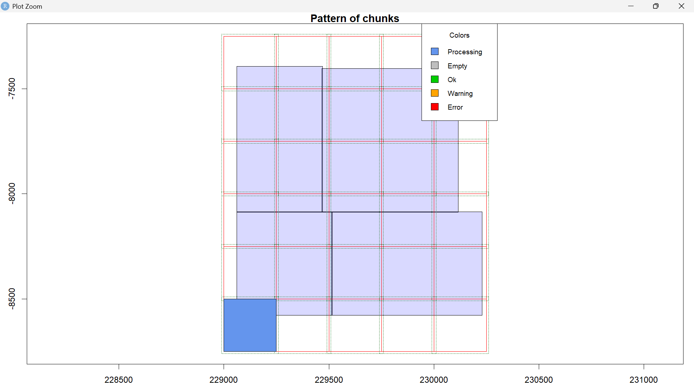

Automated DTM Generation & Contour Processing Pipeline

📌 Executive Summary
An end-to-end R automated workflow designed to process multi-chunk LiDAR point cloud datasets. The pipeline systematically batch-filters ground returns (Class 2), generates 1-meter DTMs (Digital Terrain Models) via Triangulated Irregular Networks (TIN), normalizes elevation datums across the Area of Interest (AOI), and extracts seamless, publication-ready vector contour layers.
Role: Geospatial Analyst - R programmer
Status: Completed
🛠️ Technical Specifications
- Language & Core Libraries: R (
lidR,rlas,terra,sf,leaflet,dplyr,tmap,mapview) - Input Data: Point Cloud LAS Datasets
- Output Formats: GeoTIFF (
.tif), GeoPackage (.gpkg), Interactive HTML Map - Target AOI: Gaduud Corridor, Jubaland, Somalia (Elevation Range: 2m – 14m)
🛠️ Workflow & Pipeline Architecture:
LAS Chunks -> lidR Catalog Filtering -> 1m Chunk DTMs -> terra Mosaic & Datum Shift -> Seamless AOI DTM -> 1m Vector Contours
💻 Key Features & Engineering Logic
- Parallelized Chunk Processing: Efficiently streams large LAS catalogs in 250*250 m blocks with a 10 m buffer to eliminate edge artifacts.
- Datum Uniform Shift: Normalizes raw ellipsoid/relative height offsets upward to ground level 0.0 m baseline, maintaining relative micro-topography without terrain flipping artifacts.
- Seamless Contour Extraction: Computes 1 m vector contours directly from the merged AOI raster surface to guarantee edge-matching continuity across tile boundaries.
- Optimized GeoPackage Storage: Replaces legacy Shapefiles with OGC-standard GeoPackage (
.gpkg) files to maintain field naming integrity and eliminate file-size restrictions.
R Workflow & Code Breakdown
Below is a snippet of code as structured in R.
Step 1: Call necessary libraries & initialize directories
You need to install the listed packages if not initially installed We call all necessary packages to allow function calling. We also point R to the working directory with file paths relevant to data, images and outputs.
# ------------------------------------------------------------------------------
# Call the necessary libraries
# ------------------------------------------------------------------------------
library(lidR)
library(rlas)
library(terra)
library(sf)
library(mapview)
library(tmap)
library(leaflet)
# ------------------------------------------------------------------------------
# Setup Directories & Inputs
# ------------------------------------------------------------------------------
chunk_dirs <- list.dirs("path/to/chunksdata", recursive = FALSE)
dtms_dir <- "desired/path/to/dtmOutputs"
aoi_out_dir <- "desired/path/to/final/aoi_outputs"
dir.create(dtms_dir, recursive = TRUE, showWarnings = FALSE)
dir.create(aoi_out_dir, recursive = TRUE, showWarnings = FALSE)
contour_interval <- 1 # 1-meter contour resolution
Step 2: Batch-Generate DTMs from chunked LAS files
These chunk files were split in R from an original source containing all datasets. Chunk splitting was done to cater for processing needs and the huge dataset availed. To create your own chunks, let R read in all the file names in your directory. Afterwards, let it split these datasets into chunks based on matching patterns within the file names e.g. matching 5 characters, similar suffix etc. These chunks will now be labelled as chunk1, chunk2 etc.
# ------------------------------------------------------------------------------
# Batch-Generation of DTMs from Chunked LAS Files
# ------------------------------------------------------------------------------
for (chunk_path in chunk_dirs)
{
chunk_name <- basename(chunk_path)
output_dir <- file.path(dtms_dir, paste0(chunk_name, "DTM"))
if (!dir.exists(output_dir)) dir.create(output_dir, recursive = TRUE)
ctg <- readLAScatalog(chunk_path)
if (length(ctg) == 0) next
# Optimization & Ground Filtering (Class 2)
opt_chunk_size(ctg) <- 250
opt_chunk_buffer(ctg) <- 10
opt_filter(ctg) <- "-keep_class 2 -drop_overlap"
# Generate 1m DTM
dtm_raw <- grid_terrain(ctg, res = 1, algorithm = tin())
dtm <- rast(dtm_raw)
writeRaster(dtm, file.path(output_dir, paste0(chunk_name, "DTM.tif")), overwrite = TRUE)
}
# ------------------------------------------------------------------------------
# Merge Rasters & Shift Datum
# ------------------------------------------------------------------------------
dtm_files <- list.files(dtms_dir, pattern = "\\.tif$", recursive = TRUE, full.names = TRUE)
dtm_list <- lapply(dtm_files, rast)
aoi_dtm_raw <- merge(sprc(dtm_list))
# Shift surface baseline to 0 meters
min_val <- minmax(aoi_dtm_raw)[1]
aoiDTM <- aoi_dtm_raw - min_val
writeRaster(aoiDTM, file.path(aoi_out_dir, "aoiDTM.tif"), overwrite = TRUE)
Step 3: Extract seamless contours & export geopackage
Further visualization requires use of desktop GIS software to ensure presence of all significant map elements.
# ------------------------------------------------------------------------------
# Contour extraction, data export & dummy visualization
# ------------------------------------------------------------------------------
elev_min <- minmax(aoiDTM)[1]
elev_max <- minmax(aoiDTM)[2]
levels_seq <- seq(from = ceiling(elev_min), to = floor(elev_max), by = contour_interval)
aoi_contours <- as.contour(aoiDTM, levels = levels_seq)
writeVector(aoi_contours, file.path(aoi_out_dir, "aoiContours.gpkg"), layer = "aoiContours", overwrite = TRUE)
# ------------------------------------------------------------------------------
# Interactive Visualization Setup
# ------------------------------------------------------------------------------
aoi_contours_sf <- st_as_sf(aoi_contours)
m <- mapview(
aoi_contours_sf,
color = "#8B4513",
lwd = 1,
legend = FALSE,
map.types = c("OpenTopoMap", "Esri.WorldImagery")
)
# Render map with custom attribution
leaflet::addTiles(m@map, attribution = "© 2026 Anita Carolyne | DTM Automation")
📊 Interactive Interface & Results Visualizer
To obtain an interactive webmap, use tmap and set the mode to "view". Mapview allows you to visualize your data on a basemap within the R environment. Click on any contour line to inspect exact elevation values.
--- Summarized Logic steps
- Catalog & Stream LAS Chunks: Load multi-tile LiDAR point clouds into a memory-efficient catalog (
readLAScatalog), setting chunk sizes and overlapping buffers to prevent edge artifacts. - Filter & Interpolate Ground Returns: Extract Class 2 (ground) points, dropping overlapping points, and generate individual 1-meter Digital Terrain Models (DTMs) per tile via Triangulated Irregular Network (
tin()) interpolation. - Mosaic DTM Tiles: Combine the processed raster tiles into a single spatial raster collection (
sprc) and merge them into a seamless Area of Interest (AOI) raster surface. - Normalize Elevation Datum: Calculate the minimum elevation across the merged surface and subtract it from the raster to shift the baseline to 0.0 m, eliminating negative height offsets while preserving accurate relative terrain relief.
- Calculate Bounded Contour Levels: Extract the exact shifted minimum and maximum elevation range, then construct a sequence array bounded strictly between
ceiling(min)andfloor(max)at your target contour interval (e.g., 1 m). - Extract Seamless Vector Contours: Generate continuous vector lines across the entire AOI using
as.contour()with the bounded sequence, avoiding artificial tile boundary breaks. - Export & Render: Save the raster as a GeoTIFF (
.tif), export the vector contours as an OGC-standard GeoPackage (.gpkg), and convert features to ansfobject for interactive rendering inmapview/leaflet.
--- Tools Used
| Tool | Purpose |
|---|---|
| R | Initial load, organizing & cleaning |
| ArcGIS Pro | Visualization |
| QGIS | Visualization |
📈 Practical Use Cases & Applications
Practical Use Cases
-
Hydrological & Flood Risk Modeling: In flat coastal terrain, micro-topography dictates water movement.
The automated 1-meter contours clearly identify seasonal drainage channels, and low-lying depression zones prone to waterlogging during heavy rain seasons.
-
Infrastructure & Road Network Planning: For primary transit corridors like the Kismaayo–Jilib highway stretch, precise micro-relief data supports optimal road alignment, culvert placement, and earthwork volume estimation (cut-and-fill calculations), directly mitigating runoff erosion and washouts.
-
Agricultural Land Suitability: Identifies subtle slope gradients across alluvial plains to assess gravity-fed irrigation feasibility, soil erosion risks, and surface runoff flow directions for regional agricultural development.
-
Climate Adaptation & Coastal Inundation Mapping: Establishes an accurate baseline elevation model to evaluate ecosystem vulnerability to extreme weather events, storm surges, and long-term sea-level variations along southern Somalia's coastal hinterland.
Pipeline Efficiency & Performance Benchmark
| Operational Metric | Manual GIS Workflow | Automated R Pipeline | Advantage |
|---|---|---|---|
| Execution Speed | Hours of manual software interactions per tile | Minutes (unattended batch execution) | Rapid turnaround for multi-gigabyte point clouds |
| Edge Continuity | Visible boundary gaps or line misalignments | Seamless (mosaicked surface extraction) | Completely eliminates tile boundary artifacts |
| Datum Consistency | Manual elevation offsets prone to operator error | Automated Normalization (0.0m baseline) | Enforces unified relative height metrics |
| Reproducibility | Difficult to document and standardize | 100% Scripted (version-controlled R code) | Re-run identical parameters instantly on new data |
| Deliverable Quality | Static Shapefiles subject to size limits | OGC GeoPackage + Interactive HTML Web Map | Modern, lightweight, web-ready spatial deliverables |